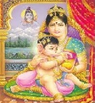

go back to Parent Index page....
Pictures...
ॐ त्र्यम्बकं यजामहे सुगन्धिं पुष्टिवर्धनम् उर्वारुकमिव बन्धनान्मृत्योर्मुक्षीय माऽमृतात्
go back to Parent Index page....

Pause Slide Show
Start Slide Show
Lord Shiva Paintings